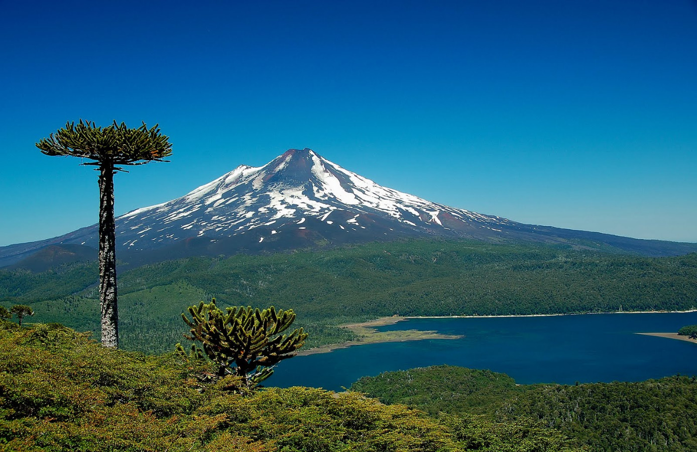
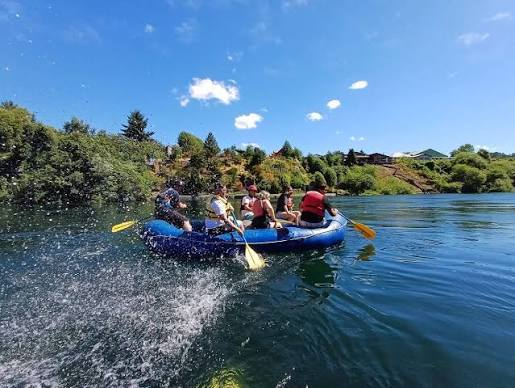
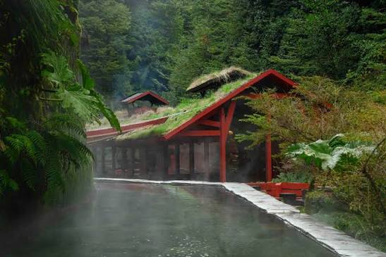

Trekking
Trekking Parque Conguillío
Recorrido guiado entre araucarias milenarias y lagos volcánicos en
el corazón del Geoparque Kütralkura.
-
Dónde: Parque Nacional Conguillío, Araucanía
andina
-
Nivel físico: Medio – caminata de 4 a 6 horas
-
Equipamiento recomendado: Zapatos de trekking,
cortaviento
Ver ruta donde se realiza

Kayak
Kayak Río Toltén
Descenso en aguas cristalinas del Río Toltén, ideal para iniciarse
en el kayak con guías locales.
- Dónde: Río Toltén, sector Pocoyán
-
Nivel físico: Medio-alto – se requiere saber
nadar
-
Equipamiento recomendado: Proveído por el
operador (chaleco, casco, remo)
Ver ruta donde se realiza

Termas
Aguas Termales Coñaripe
Relájate en pozones naturales en medio de una quebrada nativa en
Coñaripe.
-
Dónde: Termas de Coñaripe, comuna de Panguipulli
-
Nivel físico: Bajo – apto para todo público
-
Equipamiento recomendado: No requiere
equipamiento especial
Ver emprendimiento donde se realiza
 Gastronomía
Gastronomía
Feria Rain Mapu
Prueba mote con huesillo, tortillas de rescoldo y productos mapuche
en la feria local de Teodoro Schmidt.
- Dónde: Feria Rain Mapu, Teodoro Schmidt
- Nivel físico: Bajo – paseo familiar
-
Equipamiento recomendado: No requiere
equipamiento especial
Ver ruta donde se realiza
No hay actividades para este filtro.